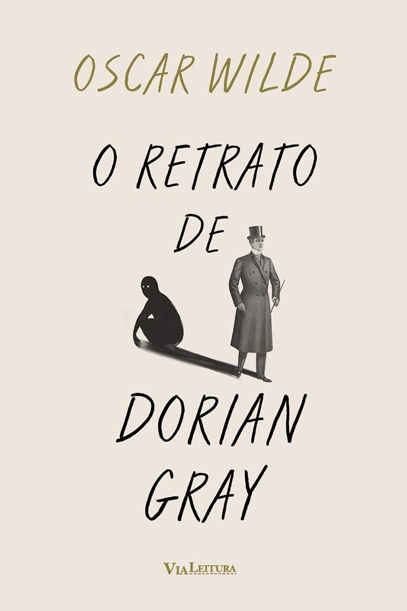
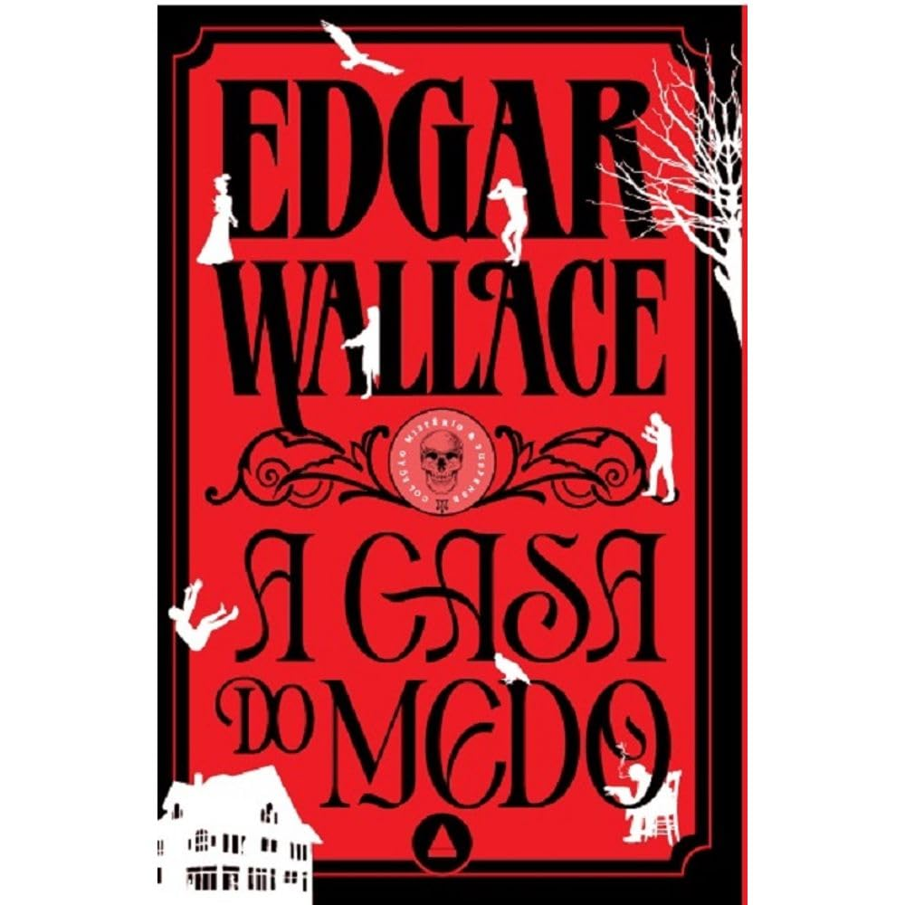

It: A coisa
Nesse clássico que inspirou os filmes da Warner, um grupo de amigos conhecido como Clube dos
Otários aprende o real sentido da amizade, do amor, da confiança... e do medo. O mais
profundo e tenebroso medo.
Durante as férias de 1958, em uma pacata cidadezinha chamada Derry, um grupo de sete amigos
começa a ver coisas estranhas. Um conta que viu um palhaço, outro que viu uma múmia.
Finalmente, acabam descobrindo que estavam todos vendo a mesma coisa: um ser sobrenatural e
maligno que pode assumir várias formas. É assim que Bill, Beverly, Eddie, Ben, Richie, Mike
e Stan enfrentam a Coisa pela primeira vez.
Quase trinta anos depois, o grupo volta a se encontrar. Mike, o único que permaneceu em
Derry, dá o sinal — uma nova onda de terror tomou a pequena cidade. É preciso unir forças
novamente. Só eles têm a chave do enigma. Só eles sabem o que se esconde nas entranhas de
Derry. Só eles podem vencer a Coisa.
"Mesmo depois de tantos anos, o público continua obcecado por IT. Ficamos obcecados porque
todos temos medos. Todos temos algo que nos assusta, sejam palhaços e aranhas ou coisas que
se escondem em um lugar muito mais profundo de nossa mente. Este livro fala com todo mundo.
É o romance mais assustador de King, e duvido que isso vá mudar" — The Guardian
Learn More

O Retrato de Dorian Gray
Único romance escrito por Oscar Wilde, O retrato de Dorian Gray foi publicado em 1890 na
revista Lippincott’s Monthly Magazine.
Na ocasião, sem avisar o autor, os editores optaram por suprimir mais de quinhentas palavras
do romance, por considerá-lo indecente.
Esse ato revoltou Wilde, que republicaria o texto em livro no ano seguinte, revisado e
ampliado – esta é a versão que trazemos nesta edição .
Dorian é um homem que se encanta com a visão de mundo hedonista do aristocrata Henry Wotton,
que considera que a beleza e a satisfação sexual são as únicas coisas que importam na vida.
Ele deseja então vender sua alma para que apenas um retrato seu pintado a óleo envelheça e
desapareça, mantendo sua juventude eternamente.
Como Fausto, Dorian tem seu desejo atendido e parte para uma vida libertina e amoral.
A obsessão estética e a vida de aparências são temas centrais de O retrato de Dorian Gray .
Ao retratar uma questão humana que persiste por séculos, Wilde criou uma obra-prima da
literatura que merece seu lugar entre os maiores clássicos da história.
Learn More

Salem
Publicado originalmente em 1975, Salem é inspirado em o Drácula de Bram Stoker. Segundo livro
da carreira de King, a obra deu origem ao filme A Hora do Vampiro , do mesmo criador do
Invocaverso ( Invocação do Mal ) e produtor de It: A Coisa.
Ambientado na cidadezinha de Jerusalem`s Lot, na Nova Inglaterra, conta a história de três
forasteiros. Ben Mears, um escritor que viveu alguns anos na cidade quando criança e está
disposto a acertar contas com o próprio passado, Mark Petrie, um menino obcecado por
monstros e filmes de terror e o Senhor Barlow, uma figura misteriosa que decide abrir uma
loja na cidade.
Após a chegada desses forasteiros, fatos inexplicáveis começam perturbar a rotina
provinciana de Jerusalem`s Lot: uma criança é encontrada morta, habitantes começam a
desaparecer sem deixar vestígios ou sucumbem a uma estranha doença. A morte passa a envolver
a pequena cidade com seu toque maléfico e Ben e Mark são obrigados a escolher o único
caminho que resta aos sobreviventes da praga: fugir.
Mas isso não será tão simples: os destinos de Ben, Mark, Barlow e Jerusalem`s Lot estão
agora para sempre interligados.
Learn More

A casa do medo
O mistério mais conhecido de Edgar Wallace, considerado um dos precursores dos thrillers!
Marks Priory, a mansão da família Lebanon, é considerada um lugar apavorante por Isla Crane,
sobrinha e secretária de Lady Lebanon.
Após o assassinato de um conhecido em um local perto da casa, as coisas se tornam ainda mais
assustadoras: nada mais parece ser exatamente o que é.
Ao investigar o crime, o inspetor-chefe Tanner logo percebe que muitas coisas não serão
facilmente explicadas. Enquanto o dr. Amersham, médico dos Lebanon, parece ter algum tipo de
controle peculiar sobre Lady Lebanon, esta se recusa terminantemente a responder qualquer
pergunta.
E o estranho comportamento de Gilder e Brooks, funcionários da mansão que mais parecem
hóspedes, torna o cenário ainda mais aterrorizante para Isla, que teme pela própria vida.
Tanner tem a certeza de que a única pessoa inocente é a que está tomada pelo terror e,
conforme se aproxima do cerne de todo o mistério, o inspetor descobre um segredo chocante e
muito bem guardado.
Learn More